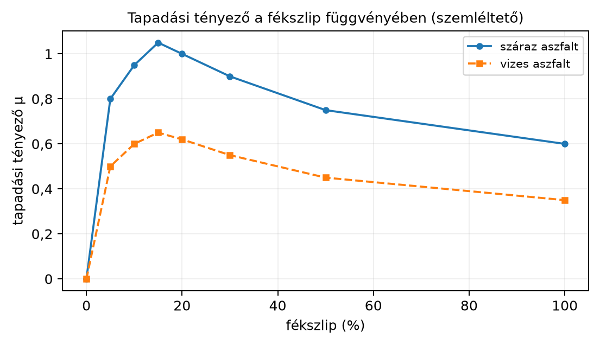
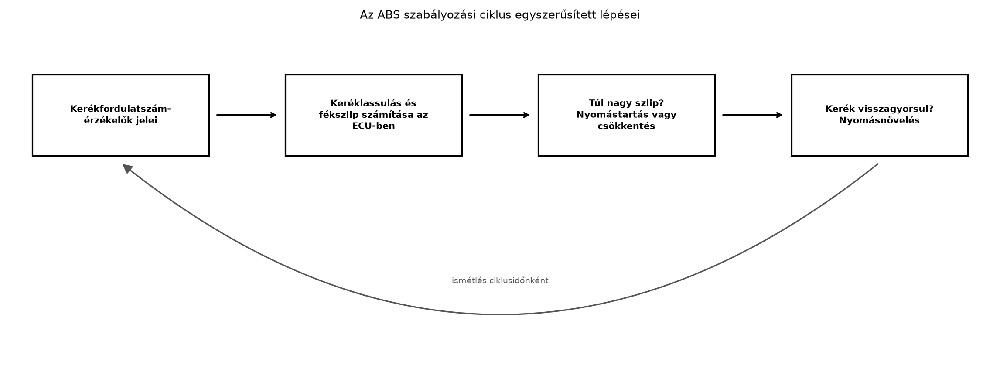

Egy hideg téli reggelen a tanműhelybe érkező autó ügyfele azt mondja: „A fékpedál beremeg, amikor hirtelen fékeztem a jeges úton, de az autó nem pördült meg, és ki tudtam kerülni az elém lépő gyalogost.” A műszerfalon azonban sárgán világít az ABS/ESP visszajelző lámpa. Az autószerelőnek pontosan kell értenie, miért remeg a pedál, mi különbözteti meg az ABS-t az ESP-től, és miért nem szabad ezeket a rendszereket egyszerűen „kihúzni” vagy figyelmen kívül hagyni. Ebben az alfejezetben a blokkolásgátló (ABS), a kipörgésgátló (ASR), az elektronikus fékerő-elosztó (EBV), a menetstabilizáló (ESP) és a vészfékasszisztens (EBA) működését, valamint diagnosztikai alapjait tanuljuk meg. A rendszer megértése nélkül a hibakódok olvasása és a mérési értékek értelmezése nem lehetséges.
Képzeljünk el egy fékező kereket. A gumi futófelülete az útfelülettel érintkező pontokon deformálódik, mintha a gumi „elkúszna” az aszfalton. Ez az elcsúszás a fékszlip. Ha a kerék teljesen blokkol, a gumi megolvadhat az útfelületen, kialakul egy kenőréteg, és a tapadási tényező lecsökken; a jármű irányíthatatlanná válik, mert a gördülő kerék oldalvezető képessége megszűnik. A blokkolásgátló célja, hogy a kereket a maximális tapadást adó, néhány százalékos fékszlip tartományban tartsa. Ezt mutatja az alábbi, szemléltető tapadás–fékszlip görbe.

A görbe azt tanítja, hogy a tapadási tényező nem a blokkolt keréknél (100 % szlip), hanem jellemzően 10–20 % körüli fékszlipnél a legnagyobb. Az ABS ezt a kedvező tartományt célozza meg, ezért a fékút általában rövidül, és – ami a legfontosabb – a kormányozhatóság megmarad.
Definíció. Fékszlip. A fékezés közbeni kerékcsúszást a járműsebesség és a kerék kerületi sebességének különbségéből számítjuk. A fékszlip jele , mértékegysége százalék:
ahol , azaz a kerék szögsebességének és gördülési sugarának szorzata. Szabadon gördülő keréknél , teljesen blokkolt keréknél , tehát .
Definíció. Blokkolásgátló (ABS). Az ABS elektronikus szabályozórendszer, amely fékezés közben figyeli a kerekek fordulatszámát, és ha egy kerék túlzott lassulást vagy blokkolási hajlamot mutat, a fékhenger nyomását átmenetileg tartja, csökkenti, majd újból növeli, így a kereket a megfelelő fékszlip-tartományban tartja.
Definíció. Kipörgésgátló (ASR). Az ASR a hajtott kerekek gyorsítás közbeni kipörgését korlátozza a motornyomaték csökkentésével és/vagy a kipörgő kerék aktív fékezésével, felhasználva az ABS kerékfordulatszám-érzékelőit.
Definíció. Elektronikus fékerő-elosztás (EBV). Az EBV a hátsó kerekek féknyomását a tényleges terhelés és lassulás függvényében elektronikusan korlátozza, helyettesítve a hagyományos mechanikus nyomáscsökkentő szelepet, és megakadályozza a hátsó tengely túlfékezését.
Definíció. Elektronikus menetstabilizáló (ESP/ESC). Az ESP folyamatosan összeveti a vezetői szándékot (kormányszög, fékezés, gázpedál) a jármű tényleges mozgásával (perdülési sebesség, keresztgyorsulás), és ha eltérést érzékel, egyes kerekeket célzottan megfékez, valamint a motornyomatékot módosítja, hogy a jármű a kívánt pályán maradjon.
Definíció. Vészfékasszisztens (EBA). Az EBA felismeri a vészfékezést – jellemzően a fékpedál lenyomási sebességéből és/vagy erejéből –, és ha a vezető nem éri el a maximális féknyomást, automatikusan megnöveli azt az ABS működési tartományáig.
Az erőhatás leírásához a tapadási tényezőt használjuk:
ahol a kerékre átvihető maximális vízszintes erő, a tapadási tényező, a kerékre jutó függőleges terhelés. Az ábrán látható módon a szliptől függ, ezért az ABS a szlip szabályozásával közvetve a tapadási erőt szabályozza.
Az ABS fő egységei:
A hidraulikus egység minden szabályozott kerék fékhengeréhez legalább két mágnesszelepet – bemeneti (nyit/zár) és kimeneti (zár/nyit) szelepet – kapcsol. Az alábbi folyamatábrán a szabályozási ciklus látható.

Szabályozási fázisok. Normál fékezéskor a bemeneti szelep nyitva, a kimeneti zárva van, így a főfékhenger nyomása közvetlenül hat a kerékfékhengerre. Ha az ECU túlzott keréklassulást észlel, először nyomástartás következik: a bemeneti szelep zár, a kimeneti is zár, így a kerékfékhenger nyomása állandó marad. Ha a kerék tovább lassul és a szlip nő, nyomáscsökkentés következik: a bemeneti szelep zárva marad, a kimeneti szelep nyit, és a fékfolyadékot a visszaszivattyú átmeneti tárolóba, majd vissza a főfékhenger felé szállítja. Amikor a kerék fordulatszáma visszagyorsul és a szlip ismét kedvező, nyomásnövelés következik: a kimeneti szelep zár, a bemeneti szelep rövid, szakaszos nyitásokkal enged vissza nyomást. A ciklus másodpercenként többször – jellemzően 5–20 Hz tartományban – ismétlődik (ellenőrizendő: gyártói paraméter). A vezető által kifejtett pedálnyomás a felső határ; az ABS soha nem hoz létre nagyobb nyomást alapféknél, mint a főfékhengerben lévő, kivéve ha az ESP aktív nyomásgenerálást is végez.
A vázlaton a nyitott szelep üres, a zárt kitöltött négyzet, a folyadék útja vastag vonal. Nyomásnövelésnél a bemeneti szelep nyitva, a kimeneti zárva; tartásnál mindkettő zárva; csökkentésnél a bemeneti zárva, a kimeneti nyitva, és a folyadék a tárolón és a visszaszivattyún át a főfékhenger felé távozik. A passzív (induktív) jeladó a fogazott gyűrű fogait, az aktív (Hall/MR) jeladó a kerékcsapágy tömítésébe épített mágneses kódgyűrű pólusait érzékeli, mindkettő meghatározott légréssel.
Az idődiagramon a nyomás először nő, majd a túl nagy keréklassulásnál tartás és csökkentés következik; a visszagyorsuló kerék után a bemeneti szelep szakaszos nyitásaival lépcsősen nő a nyomás. A HTML-kiadásban az útfelület (száraz, nedves, jég) választható, és egy időkurzorral leolvasható az aktuális fázis és a szelepállás.
Rendszertípusok. Személygépkocsiknál a 4-csatornás ABS minden kereket egyedileg szabályoz. A 3-csatornás rendszer a hátsó kerekeket közös szabályozásban, ún. select-low elv szerint kezeli: a jobban blokkoló kerék határozza meg a mindkét hátsó kerékre jutó nyomást, így a stabilitás nagyobb, de a fékút kissé hosszabb lehet. A vezérlőegység és a hidraulikus egység gyakran egybeépített egység.
Az ASR az ABS érzékelőit használja, de gyorsításkor figyeli a hajtott kerekek szlipjét. Ha a hajtott kerék gyorsabban forog, mint a járműsebességnek megfelelő kerületi sebesség, az ECU először csökkenti a motornyomatékot – például a gyújtásszög, az injektorjel vagy az elektronikus fojtószelep vezérlésével –, majd szükség esetén a kipörgő kereket aktívan megfékezi. Ez a differenciálzárhoz hasonló nyomatékátvitelt eredményez: a nem kipörgő kerékre több hajtóerő jut.
Az EBV fékezéskor ugyanazokat az érzékelőjeleket használja, hogy megbecsülje a tengelyterhelést és a lassulást. Ha a hátsó kerekek lassulása arra utal, hogy a hátsó tengely minimális terhelése mellett a kerekek blokkolni fognak, az ECU a hátsó kerékfékhenger nyomását korlátozza. Ezáltal a jármű nem farol ki erős fékezéskor. A hagyományos mechanikus nyomáscsökkentő szeleppel ellentétben az EBV alkalmazkodik a tényleges terheléshez: rakott autónál nagyobb hátsó féknyomást enged.
Az ESP a menetstabilizálásért felelős. Érzékelői a kerékfordulatszám-jeladókon kívül:
Az ESP-vezérlő az elvárt perdülési sebességet a sebességből, kormányszögből és a jármű geometriai adataiból számítja. Túl egyszerű közelítéssel:
ahol a jármű sebessége, a kormányszögből becsült pályasugár. A mért és az elvárt perdülési sebesség különbsége jelzi, hogy a jármű alul- vagy túlkormányzott-e.
Ha a jármű alulkormányzott – azaz a valós perdülési sebesség kisebb, mint a vezető szándéka szerinti –, az ESP a belső hátsó kereket fékezi, és csökkenti a motornyomatékot. Ezzel a jármű orrát a kanyar belseje felé fordítja, növelve a perdülést. Ha a jármű túlkormányzott – a hátulja kifelé csúszik, a perdülés nagyobb a kelleténél –, az ESP a külső első kereket fékezi, és a nyomatékot növelheti, hogy a járművég visszarendeződjön. A beavatkozás nagyon gyors; a vezető gyakran csak a visszajelző villogását érzékeli.
Az ESP-hez erősebb hidraulikus egység tartozik, amely a vezető pedálnyomása nélkül is képes aktív féknyomást előállítani. Ebben a visszaszivattyú nagyobb teljesítményű, és az egység töltőszelepekkel, nyomástárolóval, valamint több nyomásérzékelővel egészül ki.
Az EBA a vészfékezést a fékpedál lenyomási sebességéből, a pedálút rövidségéből vagy a főfékhenger nyomásgradienséből ismeri fel. Ha a vezető hirtelen, de nem elég erősen fékez, az EBA a rendszer által létrehozható legnagyobb féknyomást alkalmazza, amíg a vezető pedálnyomása nem csökken, vagy az ABS be nem avatkozik. Ez jelentősen csökkenti a vészfékezési utat, különösen gyengébb izomerejű vagy tapasztalatlan vezetőknél.
Adott: egy gépkocsi sebessége . A jobb első kerék kerületi sebessége fékezés közben .
Keresett: a kerék fékszlipje.
Képlet:
Behelyettesítés:
Eredmény: . Ez a tapadási görbe alapján kedvező tartományba esik, tehát az ABS nem avatkozna be. Ellenőrzés: a blokkolt kerékhez () tartozó szlip lenne, tehát a kapott érték nagyságrendileg helyes.
Adott: az autó tömege , a száraz aszfalton mért tapadási tényező (a szemléltető görbe csúcsértéke). A nehézségi gyorsulás .
Keresett: a négy kerék által összesen átvihető maximális vízszintes tapadási erő.
Képlet:
Behelyettesítés:
Eredmény: . Ez jelenti a fékrendszer által elvileg hasznosítható erőhatárt; ennél nagyobb kerületi erő a kerék blokkolását idézi elő. Ellenőrzés: a jármű lassulása (), ami a súrlódásos fizikai határnak felel meg.
Adott: a jármű sebességgel halad egy sugarú kanyarban.
Keresett: az ESP által elvárt perdülési sebesség közelítő értéke.
Képlet:
Behelyettesítés:
Eredmény: , ami fokban kifejezve . Ha a perdülési sebesség-érzékelő ennél lényegesen kisebb értéket mérne, az ESP alulkormányzottságot feltételezne. Ellenőrzés: a kanyarodásból számított keresztgyorsulás , ami száraz úton még a tapadási határon belül van; csúszós úton az ESP beavatkozhat.
A fékrendszer biztonsági rendszer, ezért a hibakereséshez a gyártói diagnosztikai előírás, a kapcsolási rajz és a járműspecifikus adatok betartása kötelező. Az alábbi ellenőrzőlista a leggyakoribb beavatkozásokhoz ad támpontot; a konkrét mért értékek példák.
Biztonsági korlát. A feladat tanműhelyi környezetre, oktató felügyeletére és a gyártói javítási utasítás betartására vonatkozik; a megadott értékek tanulási példák.
Egy középkategóriás személygépkocsi ABS/ESP visszajelző lámpája folyamatosan világít, és a műszaki vizsgára való felkészítés során a rendszerteszter a jobb hátsó kerékfordulatszám-érzékelő jelének hiányát jelzi.
A műhelyben a szerelő a járművet emelőre helyezi a gyártói emelési pontokon, majd biztonsági bakra támasztja. A jobb hátsó kerék leszerelése után megvizsgálja a jeladó kábelét és csatlakozóját. A csatlakozó burkolata repedt, belsejében nedvesség és korrózió látható; a jeladó kivezetésén a multiméter ellenállásmérése végtelen szakadást mutat. Az induktív jeladó tekercse tehát szakadt. A kerékcsapágy holtjátéka nem tér el a gyártói tűréstől, így nem okozott mechanikai sérülést.
A javítás során a szerelő a csatlakozót megtisztítja, új jeladót szerel be a gyártói előírás szerinti léghézaggal, majd a hibakódot törli. Próbapadon és közúti próbaúton az ABS beavatkozása a fékpedálon érezhető, a lámpa elalszik, és a rendszer readiness-tesztje lezárul. Az ügyfélnek elmagyarázza, hogy a lámpa világítása nem a fékek teljes kiesését jelentette, hanem az ABS funkció kikapcsolását; a járművet a javasolt időszakos szervizre is behozza.
Hiba 1: „Az ABS minden útfelületen rövidebb fékutat
ad.”
Nem mindig igaz. Laza hóban, kavicson a blokkolt kerék éket képezhet az
útfelületben, és a fékút rövidebb lehet, mint az ABS-szel, a
kormányozhatóság viszont romlik. Az ABS elsődleges célja a stabilitás és
irányíthatóság megőrzése, nem kizárólag a fékút minimalizálása.
Hiba 2: „ABS-es autón vészfékezéskor pumpálni kell a
fékpedált.”
Téves. Az ABS éppen a pedál pumpálását helyettesíti, és gyorsabban,
pontosabban szabályoz. A vezetőnek erős, folyamatos pedálnyomást kell
kifejteni; a pedálrezgés a rendszer normális működését jelzi.
Hiba 3: „Ha az ESP-lámpa világít, a hagyományos fék is
használhatatlan.”
Téves. Az alap hidraulikus fékrendszer általában működőképes marad, de
az ABS/ASR/ESP funkciók kikapcsolnak. A jármű stabilitása romlik, ezért
a hibát mielőbb javítani kell, különösen csúszós úton.
Hiba 4: „Kormányszög-érzékelő tanítására csak érzékelőcsere
után van szükség.”
Téves. Az ESP-vel (vagy EPS/ADAS-szal) szerelt járműveken
futóműbeállítás, kormánymű- vagy kormányoszlop-javítás, vezérlőcsere és
egyes típusoknál akkumulátor-lekötés után is el kell végezni a gyártói
előírás szerint (ellenőrizendő), különben a rendszer hibás beavatkozást
hajthat végre. A csak ABS-szel szerelt járművek jellemzően nem is
rendelkeznek kormányszög-érzékelővel.
Önellenőrzés – válaszok
1. feladat (A)
Írd le a fékszlip képletét, és nevezd meg a benne szereplő mennyiségeket
és mértékegységeiket.
2. feladat (A)
Egy kerék
járműsebességnél a fékezés során
kerületi sebességet ér el. Számítsd ki a fékszlipet, és ítéld meg, hogy
az ABS valószínűleg beavatkozik-e.
3. feladat (B)
Egy
tömegű autó vizes aszfalton fékez. A tapadási tényező legyen a
szemléltető görbe csúcsánál
.
Számítsd ki a maximális hasznosítható fékerőt, és becsüld meg a jármű
lassulását.
4. feladat (B)
Tedd helyes sorrendbe az ABS ciklus fázisait: nyomáscsökkentés,
nyomástartás, nyomásnövelés. Indokold, milyen keréklassulás és szlip
esetén melyik következik.
5. feladat (C)
Egy autó
sebességgel halad egy
sugarú kanyarban. Az ESP perdülési sebesség-érzékelője
értéket mér. Számítsd ki az elvárt értéket, és döntsd el, hogy alul-
vagy túlkormányzottságot jelez-e a rendszer.
6. feladat (D)
Ügyfélpanasz: ABS-lámpa világít, a fékpedál normál nyomásra is pulzál,
és a jármű fékezéskor jobbra húz. A műhelyben a bal első
kerékfordulatszám-érzékelő jele hiányzik, a jobb első kerék jele
szabályos. Milyen következménye lehet ennek az ABS-re és a fékezésre?
Milyen ellenőrzéseket végeznél?
1. feladat (A)
A fékszlip:
,
ahol
a jármű sebessége m/s-ban,
a kerék kerületi sebessége, szintén m/s-ban;
a kerék szögsebessége (rad/s),
a gördülési sugár (m).
2. feladat (A)
.
Mivel a szlip jóval a kedvező 10–20% fölött van, az ABS beavatkozna, és
a nyomást csökkentené. ∎
3. feladat (B)
.
A lassulás
.
Ellenőrzés: vizes aszfalton ez reális, hiszen a száraz aszfalténál
kisebb. ∎
4. feladat (B)
Sorrend: (1) nyomástartás, (2) nyomáscsökkentés, (3)
nyomásnövelés.
Nyomástartás akkor következik, amikor a keréklassulás túl nagy, de a
szlip még nem kritikus; ha a szlip tovább nő, nyomáscsökkentés; ha a
kerék visszagyorsul, nyomásnövelés. ∎
5. feladat (C)
,
ami
.
A mért
kb. 33%-kal nagyobb az elvártnál, tehát a jármű a kívántnál gyorsabban
fordul, azaz túlkormányzott viselkedés valószínű. Ezt
az ESP-nek a külső első kerék fékezésével ellensúlyoznia kell. ∎
6. feladat (D)
A jeladó-hiba miatt az ABS (és az ESP) letilt, a lámpa világít; az
alapfék működik. A normál fékezéskori pulzálás és a jobbra húzás nem az
ABS-ből ered: a féktárcsák ütését, vastagságkülönbségét, a nyergek és
betétek állapotát, a fékpadon az oldalankénti fékerőt külön vizsgálni
kell. A két hibát egymástól függetlenül kell javítani. Az ABS-hiba
ellenőrzése: a hibakód kiolvasása, a bal első jeladó és jeladógyűrű
vizsgálata, a kábel és csatlakozó ellenőrzése, oszcilloszkópos
jelvizsgálat, a kerékcsapágy holtjátéka. A javítás után teszt,
hibakód-törlés és próbaút szükséges.
Az ABS a kerekek fékszlipjét szabályozza, hogy a kerék ne blokkoljon, hanem a maximális tapadást adó, jellemzően 10–20% közötti szlip-tartományban dolgozzon. A fékszlip a járműsebesség és a kerék kerületi sebességének különbségéből számítható. Az ABS szabályozási ciklusa nyomástartásból, nyomáscsökkentésből és nyomásnövelésből áll; a kerékfordulatszám-érzékelők jeleit az ECU dolgozza fel, a hidraulikus egység pedig kerékenként módosítja a féknyomást. Az EBV a hátsó kerekek féknyomását terhelésfüggően korlátozza, az ASR a hajtott kerekek kipörgését gátolja, az ESP a jármű perdülési sebességét és keresztgyorsulását hasonlítja a vezetői szándékhoz, és alulkormányzottság esetén a belső hátsó, túlkormányzottság esetén a külső első kereket fékezi. Az EBA a vészfékezést felismerve maximális féknyomást hoz létre. Továbbvitt eredmény. Az ABS és ESP szabályozási kör, az érzékelők és beavatkozók működése, valamint a diagnosztikai eljárás alapelemei a Vezetőtámogató rendszerek és kalibrálásuk és a Fékjavítás: betét, tárcsa, dob, nyereg, légtelenítés, ABS és EPB alfejezetekben térnek vissza. A fékrendszer biztonsági berendezés, ezért minden munkát a gyártói előírás szerint, megfelelő képzettséggel kell végezni.